TenkaCloudの仕組み
TenkaCloudの構成図
画面内で拡大し、スクロールまたはマウスでドラッグして読めます。表示に外部ビューアやログインは必要ありません。
構成図を読み込めませんでした。再読み込みするか、上の「SVGを開く」「Draw.io原本」を使用してください。

既存Draw.ioのSaaS物理構成図
左側に組織の登録と開催者向けアプリ、中央に問題デプロイと参加者向けAPI、右側にチームのAWSアカウントと外部サービスを配置しています。全体で位置関係を確認してから、拡大して配線を読めます。
原本は system-architecture.drawio の1ページ目です。図の配置と配線を保ち、Draw.ioで描画した結果を埋め込んでいます。コードから整理した構成図であり、実AWSリソースを取得した稼働証跡ではありません。
SaaS構成を3つの役割で読む
Control Planeは利用する組織を管理し、Application Planeは組織ごとのアプリを提供します。TenkaCloudは開催者向けのイベント管理を実装し、問題デプロイエンジンと競技者コンソールを追加しています。
役割を整理した図です。SBTが競技機能を提供するわけではありません。物理構成ではApplication Planeのpooled / siloが分かれるため、3スタックという意味でもありません。実装上の構成
開催者の「配置」から、参加者が問題を開くまで
管理APIが配置要求を受け付け、EventBridgeからStep FunctionsとLambdaへ処理を渡します。チームのAWSアカウントにAssumeRoleし、CloudFormationで問題環境を作ります。クロスアカウントのアクセスにはExternalIdを使います。
これはクラウド環境を必要とする問題の経路です。暗号バトルは共有の競技APIで操作を判定し、状態と得点を更新します。参加者向けAPIと競技APIの細かな配線は「Liteの詳細構成」で確認できます。
AWS上のLite構成
左が運営基盤、右がチーム別の演習環境です。管理者はCognitoで認証し、API Gateway経由でイベントを操作します。問題の配置・削除はEventBridge → Step Functions → Lambda → AssumeRole → CloudFormationで進めます。
参加者APIとCoordination Dispatcherは別々のLambda Function URLです。参加者画面はそれぞれを呼び分け、管理者向けの認証とは別にチームキーを使います。競技状態も「認証 / データ / 監視」内のDynamoDBに保存します。読み書きの詳細配線は省略しています。
主要経路をまとめた論理構成です。すべてのLambda・API・スタックを列挙した配線台帳や、実AWS環境の稼働証跡ではありません。権限設計・チーム分離・採点・削除完了の確認は基盤側に残ります。
共通化する境界を変えた
初期側は当時の方針を示す概念図で、全クラウドで稼働していたという意味ではありません。AWS-native側ではサービスの実行や保存をAWSへ委ね、問題を追加する契約と競技体験に集中します。
原本：各図の「Draw.io原本」から取得できます。AWSアイコン：Amazon.com, Inc. or its affiliates（AWS Icons for PlantUML / CC BY-ND 2.0）。